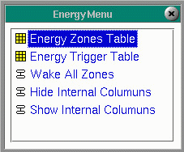

|
The Energy Menu allows for zones to be put in sleep mode when they have not seen product for a user-configurable amount of time. Selecting the Energy Menu will display several menu options.
|  |
Copyright © 2001 Fortna Inc. All rights reserved.